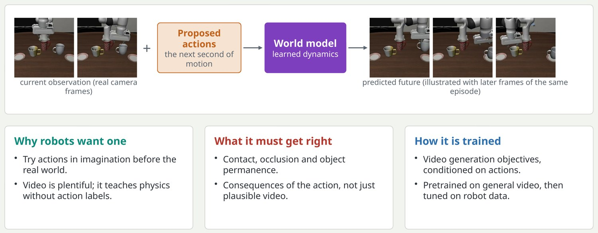
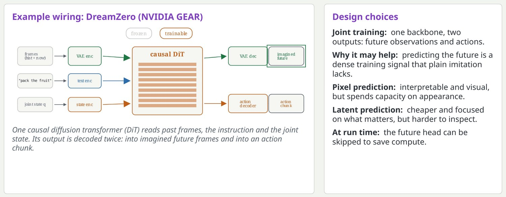
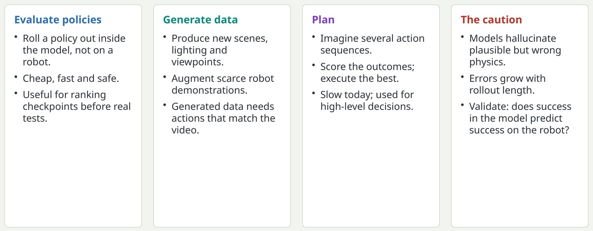

World models: learning to predict what happens next
A world model takes the current situation and a proposed action, and predicts the outcome.

The idea is old in control: have a model of the dynamics and use it to plan. What is new is learning the model from video at scale, using the video generation technology from section 5. An action-conditioned video model takes the current frames and a sequence of robot actions and generates the frames that would follow.
Key pointA policy answers "what should I do?". A world model answers "what will happen if I do this?".
World-action models: predict the future and act, in one model
Instead of a separate policy and world model, train one network to produce both the future and the actions that cause it.

This is an active research direction and results are still being established, so present it as a bet, not a settled answer. The appeal is that video prediction gives supervision on every pixel or latent of every frame, while action imitation gives only a few numbers per step. The latent versus pixel debate mirrors the JEPA discussion in section 4.
Key pointThe bet: a model that can predict what its actions will cause has learned something a pure policy has not.
Three uses for a world model, and one caution
What teams actually do with learned simulators today.

A learned simulator that is optimistic will rank bad policies highly. The validation that matters is correlation between model-based evaluation and real-robot evaluation on the same set of policies.
Key pointA world model is only as useful as it is faithful; always check it against real outcomes.